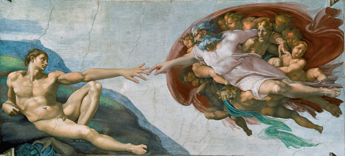
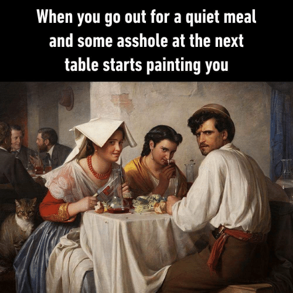
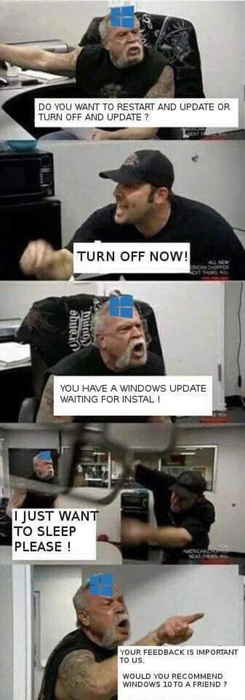

Qu'est-ce qu'un meme ?
Un meme Internet est un élément, une idée, prenant très souvent la forme d'une image ou d'une vidéo, qui se propage à grande échelle. Un meme se rattache à la pop culture, c'est pour cela qu'on dit qu'il est "culturellement reconnaissable". Généralement, il a pour but de faire rire.
Trois exemples pour la mise en bouche


L'inutilité
Il est dénué d'intérêt. Bien qu'il puisse porter un message caché, de base, le meme n'a pas l'ambition de faire avance le Schmilblick. Si on lui retire da dimension humoristique, il n'apporte aucune valeur ajoutée.
Une private joke à grande échelle
Il fait référence à une réplique de film, à l'actualité, à un jeu-vidéo, à une musique, voire parfois, à un autre meme. Seuls ceux qui auront repéré la référence comprendront le sens du meme.
Le détournement
Il se réapproprie un élément de la pop culture en l'utilisant dans un autre contexte que celui d'origine. C'est le décalage entre le meme et l'oeuvre originale qui est drôle.
Un design reconnaissable
Il attire l'oeil par un graphisme volontairement peu soigné, voire destructuré. Un meme possède des images mal détourées, mal redimensionnées et enfreint toutes règles usuelles de composition de l'image.
Toujours plus
Il pousse à l'extrême tout ce que vous auriez pu imaginer. Un son distordu et des couleurs saturées sont des ingrédients couramment utilisés pour la confection de memes.
Tout un art
Il forme un concentré d'ironie et de cynisme de part ses illustrations, sa disposition et son contenu textuel qui n'auront pas été choisi au hasard.
Ultra codifié
Il respecte des codes admis de tous. Pour être correctement lu, un meme bien conçu répond, paradoxalement, à des règles précises pour éviter les erreurs d'interprétation.
Un temps de vie assez court
Il se propage relativement rapidement mais disparaît aussitôt. Rares sont les memes dont on entrevoit encore un signe de vie le trimestre d'après. La tendance s'efface vite et se tourne vers d'autres memes assez rapidement.
Il ne naquit point meme, il le devint
Il circule, dans un premier temps, entre amis, entre personnes d'un même milieu (ex: ensemble de joueurs d'un jeu vidéo, groupe de discussion, ...) . Ce n'est que par une suite d'événements incontrôlés qu'il peut devenir viral et être dignement qualifié de meme.
Oubliez ce que vous venez de lire
Il ne suit aucune règle fixe. La notion de meme évolue plus vite que son ombre. Il y a 5 ans, les memes n'avaient rien à voir avec ceux d'aujourd'hui. "Un an sur Internet équivaut à 7 ans dans la vraie vie" disait François Descraques.